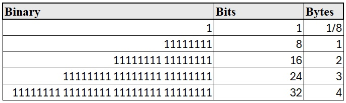
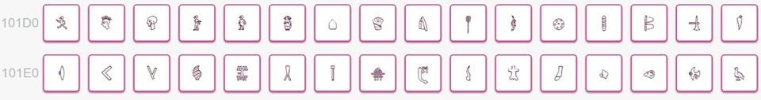

Encoding
Dr. Jesse Stewart
2025-08-07
Encoding: How Characters Become Bits
1 What is Character Encoding?
Character encoding is the system by which computers store, interpret,
and transmit characters (e.g., a, 文,
ຽ).
Your computer doesn’t understand letters or symbols as we do. It only understands numbers, and those numbers are ultimately represented as binary (0s and 1s).
So: > Character → Number → Binary
1.1 Characters are Numbers
Characters are mapped to numbers using agreed-upon standards (encoding systems). For example:
| Character | Decimal Code |
|---|---|
| A | 65 |
| a | 97 |
| 文 | 25991 |
1.2 Numbers are Binary
Once a character is mapped to a number, that number is stored in binary. For example:
| Character | Decimal | Binary |
|---|---|---|
| A | 65 | 01000001 |
| a | 97 | 01100001 |
This binary information is what’s physically stored on your computer (via voltages, magnetic states, etc.).
2 Representing numbers
2.1 How (English-speaking) humans represent numbers
The decimal system (base 10)
Digits: 0, 1, 2, 3, 4, 5, 6, 7, 8, 9
English: 0, 1, 2, 3, 4, 5, 6, 7, 8, 9
Representing: 423 and 90,760
| Example | 10^4 | 10^3 | 10^2 | 10^1 | 10^0 | Answer |
|---|---|---|---|---|---|---|
423 |
||||||
| - | - | 4 | 2 | 3 | ||
| - | - | 400 | +20 | +3 | 423 | |
90,760 |
||||||
| 9 | 0 | 7 | 6 | 0 | ||
| 90,000 | +0 | +700 | +60 | +0 | 90,760 |
2.2 How computers represent numbers
The binary system (base 2)
Digits: 0, 1
English: 0, 1
Representing: 11111111, 10100111 and
00000100
| Example | 2^7 | 2^6 | 2^5 | 2^4 | 2^3 | 2^2 | 2^1 | 2^0 | Answer |
|---|---|---|---|---|---|---|---|---|---|
11111111 |
|||||||||
| 1 | 1 | 1 | 1 | 1 | 1 | 1 | 1 | 225 | |
| 128 | +64 | +32 | +16 | +8 | +4 | +2 | +1 | ||
10100111 |
|||||||||
| 1 | 0 | 1 | 0 | 0 | 1 | 1 | 1 | ||
| 128 | +0 | +32 | +0 | +0 | +4 | +2 | +1 | 167 | |
00000100 |
|||||||||
| 0 | 0 | 0 | 0 | 0 | 1 | 0 | 0 | ||
| 0 | 0 | 0 | 0 | 0 | +4 | 0 | 0 | 4 |
2.3 How humans represent computer numbers
The hexadecimal system (base 16)
Digits: 0, 1, 2, 3, 4, 5, 6, 7, 8, 9, A, B, C, D, E, F
English 0, 1, 2, 3, 4, 5, 6, 7, 8, 9, 10, 11, 12, 13, 14, 15
Representing: 423 and 13AF
Imagine the French system 1-16, if it didn’t revert back to base
10.
| Example | 16^4 | 16^3 | 16^2 | 16^1 | 16^0 | Answer |
|---|---|---|---|---|---|---|
423 |
0 | 0 | 4 | 2 | 3 | |
| 0 | 0 | 1024 | +32 | +3 | 1059 | |
| (16^2)*4 | (16^1)*2 | (16^0)*3 | ||||
13AF |
||||||
| 0 | 4096 | +768 | +160 | +15 | 5039 | |
| (16^3)*1 | (16^2)*3 | (16^1)*10 | (16^0)*15 | |||
| A=10 | F=15 |
2.4 Hexadecimal (Base 16) & Binary
Computers often use hexadecimal (base 16) as a shorthand for binary. Notice that there are 16 digits from the min and max Hex and 4 bit binary numbers. Online Hex Calculator
Each hex digit represents 4 bits:
| Hex | Binary |
|---|---|
| 0 | 0000 |
| 1 | 0001 |
| 2 | 0010 |
| 3 | 0011 |
| 4 | 0100 |
| 5 | 0101 |
| 6 | 0110 |
| 7 | 0111 |
| 8 | 1000 |
| 9 | 1001 |
| A | 1010 |
| B | 1011 |
| C | 1100 |
| D | 1101 |
| E | 1110 |
| F | 1111 |
A Unicode value like U+00E9 = 11101001 in binary =
E9 in hex.
3 Why Encoding Matters
Your text editor, terminal, and programming language must all agree on how bytes should be interpreted. If they disagree:
é(Latin small letter e with acute) might show up asé漢(Chinese Han character) might show up as a series of nonsense symbols
This is why you might see gibberish when you open a file with the wrong encoding.
4 Bytes and Bits
- A bit is a single binary digit: 0 or 1
- A byte = 8 bits (can represent values from 0 to
255)
- Two bytes = 16 bits (values from 0 to 65,535)

Modern encoding (like UTF-8) uses variable-length encoding, where some characters are stored in 1 byte and others may need 2, 3, or even 4 bytes.
Encoding and byte size videos demo
5 Summary
| Term | Definition |
|---|---|
| Bit | A single 0 or 1 |
| Byte | 8 bits (can represent 0–255) |
| ASCII | 7-bit encoding for English characters |
| Unicode | Universal standard for all writing systems |
| UTF-8 | Variable-length encoding format for Unicode |
| Hex | Base-16 number system used as shorthand for binary values |
6 Encoding in R
In R, you can: - Convert numbers to hex with
as.hexmode() - View raw binary with
charToRaw()
as.hexmode(255) # returns "ff"
charToRaw("a") # returns 61 (hex for 97)
charToRaw("文") # returns e6 96 87 (UTF-8 encoded bytes)7 Character Encodings are Arbitrary
Different platforms historically used different encodings (MacRoman, Windows-1252, etc.).
This is why text files sometimes break when moved between systems.
Ideally, everyone should use UTF-8, and most modern
systems do.
8 History of encoding
8.1 EBCDIC (Extended Binary Coded Decimal Interchange Code)
A universally despised encoding made up by IBM for its mainframes in
the 1960s.
8.2 ASCII (American Standard Code for Information Interchange)
The standard developed in 1963 that beat out the others (used until
1991). ASCII only uses 127 of the possible 255 numbers. - 7-bit encoding
(values from 0 to 127) - Includes only English letters, digits,
punctuation, and control characters - Example:
'A' = 65 = 01000001 - Extended ASCII (8-bit)
adds support for European accented characters (128–255)
The ASCII characters from 0 to 31 (0x1F) are control characters that
caused early teletype terminals to do special things.
A teletype machine, also known as a teleprinter or TTY, is an
electromechanical device used to send and receive typed messages over
communication channels. It acts as a remote typewriter, transmitting
coded electrical pulses that represent typed characters, which are then
decoded and printed at the receiving end.
Some examples:
00 null (ignore me)
07 ˆG alarm (ring a bell)
08 ˆH backspace
09 ˆI tab
0A ˆJ line feed (roll the paper up)
0C ˆL form feed (start a new page)
0D ˆM carriage return (move the print head left)
To get an old teletype to start a new line, you had to send it both a CR (carriage return, to get the print-head back to the left edge of the paper) and a LF (line feed, to get the paper roller to feed the paper up one line). Nobody got around to standardizing how to represent the end of a line electronically when you weren’t using a teletype.
most Unix LF Macs CR PCs CR + LF

If a file you get from someone else’s computer suddenly looks like it
has no line breaks, this is what’s happening. (R mostly hides this
problem from you.)
ASCII…
- can’t represent many of the keys on your keyboard (e.g., the arrow
keys, F1-F12)
- can’t represent accented characters
- but is only using half the possible numbers (up to127, not up to
255).
- So, again, computer manufacturers (IBM, Apple, etc.) made up their own
uses for the upper-range numbers.
– i.e., 128-255 were system-dependent e.g., 134 on a PC might be
different than on a MAC.
8.3 ISO Latin 1
The American National Standards Institute (ANSI) developed a new character set, approved by the International Standards Organization (ISO) in 1985, as ISO-8859-1.
Characters 0 to 131 are copied straight from ASCII. 132 to 255
contain accented Roman characters used in most Western European
languages.

8.4 Windows-1252
Microsoft claimed to use the ANSI standard for Windows, but filled in the characters from 0x80 to 0x9F with their own inventions, like dashes, curly quotation marks, and the trademark symbol.
Technically, this is Windows code-page 1252, but they usually mislabel it “ANSI”. If you’ve ever had quotation marks not show up on a web-page, your browser is reading a Windows-1252 encoded page as if it were something standard.
“ANSI” → “ANSI”
(tm) → ™
(r) → ®
– → —
8.5 Encoding settings in browers
Chrome 55, Opera, Edge have removed the Encoding menu and will do
auto-encoding detection now.
Encoding options in Firefox
Encoding options in Explorer
Nice programmers define the character set
8.6 After ISO-8859-1 (Latin 1)
- Latin 1 still can’t quite handle all the Roman characters used in
Europe – like € – let alone Cyrillic, Greek, Hebrew, Cree, and Arabic.
That’s why there’s ISO-8859-2 through ISO-8859-10 (or more).
- One byte gives you only 256 possible characters, so there’s no way
you’ll get all possible accented Roman characters, like Ř, Ű, č, ę, ů.
Let alone IPA. Let alone Chinese.
- Faking foreign and phonetic symbols with fonts isn’t good
enough.
- So in the late 1980s people began working on a character encoding using 2 bytes per characters 65,536 possible characters! (Still not enough.)
8.7 Unicode
- Unicode is a single character encoding, in the sense of mapping
numbers onto characters.
- But there are different possible ways of representing the numbers, so it’s better to see Unicode as a family of encodings.
- A much larger standard aiming to include every character in every human writing system
- Unicode can be encoded in several ways:
- UTF-8 (most common on the web)
- UTF-16
- UTF-32
- UTF-8 (most common on the web)

Browse
Unicode
IPA examples
Cree examples

Arrow examples
Math examples
Braille examples
Ethiopic examples
Phaistos Disc examples

Chinese examples
Unicode naming conventions - examples
8.8 Unicode Fonts
You used to need the right fonts to be able to see the characters on your screen or print them. Most Unicode fonts don’t cover all the ranges.
Some common Unicode fonts:
- Cambria
- Gentium (Latin, IPA, Greek)
- SIL’s Doulos (IPA, Charis IPA) etc.
- Lucida Unicode (lots of ranges)
- Arial Unicode (even more)
- DejaVu (lot’s too)
- Linux Libertine See supported ranges
Nowadays many common fonts cover what we need for IPA, however, some are better at spacing and stacking diacritics than others.
9 Using Unicode in R
R uses Unicode internally for all strings. You can get Unicode characters into R by:
- typing them in (if your keyboard will let you) or copying and pasting from a character map program ( ʃ ).
- using (where NNNN is the hexadecimal Unicode number e.g.,
\u0283for ʃ )
You can also read in a file using any of the other encodings (telling R which one) and it will automatically be converted into Unicode.
10 Byte-order mark
A Byte Order Mark (BOM) is the Unicode character U+FEFF placed at the very start of a text file. Its original job was to tell readers the byte order (endianness) for UTF-16 or UTF-32 encodings—i.e., whether multi-byte code units are little-endian or big-endian.
- UTF-16BE starts with bytes
FE FF
- UTF-16LE starts with
FF FE
- UTF-32BE starts with
00 00 FE FF
- UTF-32LE starts with
FF FE 00 00
Byte Order Mark (BOM) video demo
- For UTF-8, byte order isn’t a thing, but some tools still stick a
marker at the front:
- UTF-8’s BOM bytes are EF BB BF
If you have a number represented in two bytes, 20 09– you can still:
- put the bytes in the right order: 20 09 litte-endian, as in PCs and recent Macs
- put the bytes in the wrong order: 09 20 big-endian, as in most Unix computers
This has caused endless problems with files transferred from one type
of computer to the other. One attempt to solve this problem: Put the
“zero-width no-break space” character (0xFEFF) at the start
of every Unicode file. The opposite order 0xFFFE is forever
reserved as meaningless. Unfortunately, people don’t use the BOM
consistently.
When you load a data set into R, often times you will run into an
encoding error in the name of the first header
Fix: Rename the column
colnames(DataSetName)[1]="NewName"What happens if it’s set wrong?
If the BOM says “interpret me as X” but the file is really in Y, the software will decode the byte stream incorrectly:
- Problem: UTF-8 file but BOM says UTF-16
- Result: Reader groups bytes in pairs, misaligns everything, and
produces nonsense characters or errors.
- Result: Reader groups bytes in pairs, misaligns everything, and
produces nonsense characters or errors.
- Problem: UTF-16LE file but BOM says UTF-16BE
- Result: Every two-byte sequence gets swapped.
- Example: 61 00 (UTF-16LE “a”) → misread as 00 61 (UTF-16BE “Latin
small letter a with circumflex” U+0061 becomes U+6100).
- Result: Every two-byte sequence gets swapped.
- Problem: Wrong BOM in practice
- Result: Instead of “䭠” (UTF-8: E4 AD A0), the reader might treat
the bytes as ISO-8859-1 or Windows-1252 and show “Σ¡á”. (See
Video!)
The data hasn’t changed — only the interpretation did.
- Result: Instead of “䭠” (UTF-8: E4 AD A0), the reader might treat
the bytes as ISO-8859-1 or Windows-1252 and show “Σ¡á”. (See
Video!)
11 Saving your encoding
Notepad
Editpad Lite
Different Unicode encodings
- UCS-2 (Universal Character Set 2): Use two bytes for each
character.
- UCS-4: Use four bytes for each character.
- UTF-8 (Universal Transmission Format 8):
- Use one byte for ASCII characters. 1 = A
- Use two bytes for other characters up to 0x07FF, starting with the
bits 110 – most other major alphabets.
- Use three bytes for other characters up to 0xFFFF, starting with the
bits 1110 – Chinese characters, etc.
- Use four bytes for even higher characters.
The BOM in UTF-8 is EF BB BF, which shows up as  in Latin-1
editors and browsers. UTF-8 is the default encoding for reading and
writing files in Python 3, XML, R and many other places.
Watch on YouTube
- Use one byte for ASCII characters 1 = a; 1 = A
- Use two bytes for most other major alphabet
- Use three bytes for Chinese characters, etc.
- The BOM in UTF-8 is EF BB BF, ()
12 Manipulating encoding in R
Syntax: as.character("\uNNNN")
as.character("\u0041")
as.character("\u41")
#[1] "A"
as.character("\u4b60")
#[1] "䭠"Syntax: utf8ToInt("symbol")
utf8ToInt("A")
#[1] 65
utf8ToInt("䭠")
#[1] 19296
utf8ToInt("ﭶ")
#[1] 64374Syntax: as.hexmode(NNNN)
as.hexmode(65)
#[1] 41
as.hexmode(19296)
#[1] 4b60
as.hexmode(64374)
#[1] fb7613 HOMEWORK
13.1 Representing numbers
Write out 5,207 using the decimal system chart.
Write out 010111011 using the binary system chart.
Write out A1F4 using the hexadecimal system chart.
Write out B1D9 using the hexadecimal system chart.
13.2 R
What is the hexcode for these characters?
၍, ʤ, ㊌, Ꮺ
What characters are assigned to the following hexcodes?
0937, 0B94, 266B,
7A69
Convert the following decimal to hex, then give their assigned
Unicode character.
1150, 1354, 2843,
65